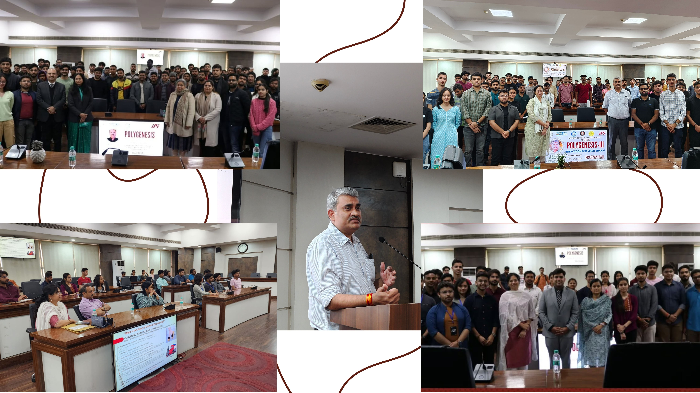

About Indian Plastics Institute

The Indian Plastics Institute (IPI) is a technical professional organization that was officially launched on May 6, 1985. Significantly, IPI took over from the Plastic and Rubber Institute, London (PRI), establishing itself as a prominent body in the field. Today, IPI has grown into a robust professional body, bringing together industrialists, plastic technologists, academics, economists, and students. Its influence extends across India with 14 chapters, and it boasts international reach through two overseas association partnerships with Sri Lanka and Nepal. IPI DTU is a leading society that works to connect the industrial world with academia. We're all about promoting sustainability and a circular economy through scientific and industrial research. We do this by interacting with folks from Public Sector Undertakings (PSUs), various think tanks, industries, corporations, and research institutes. We also jump into nationwide competitions, tackling industry-defined problems with a focus on sustainable solutions. We really push for strong community ties between industry and academia. This means we’re often at business and industrial conventions, and we get hands-on experience through industry visits. Plus, we share solid research on hot topics like chemistry, material science, new renewable energies, and climate change.
Our Flagship Series - POLYGENESIS

At the Indian Plastics Institute (IPI), we are committed to fostering meaningful collaboration between academia and industry through a variety of impactful events. One of our flagship initiatives is the Polygenesis series, where we invite distinguished professionals to share their insights and experiences. Past speakers have included esteemed personalities such as Mr. Dinesh Chopra, Chairman of the ICC Industry-Academia Committee; Mr. Ashish Rastogi, CEO of ASSA Group; and Dr. Anant Narayan Bhatt, Senior Scientist at DRDO’s Institute of Nuclear Medicine and Allied Sciences. In addition to guest lectures, we regularly organize industrial visits, technical seminars, and hands-on workshops and actively participate in major expos, fairs, and hackathons. These events not only contribute to professional and personal growth but also emphasize innovation, sustainability, and interdisciplinary learning in the fields of chemical and material sciences. Our aim is to continually bridge the gap between academic learning and industry expectations, empowering the next generation of professionals. Polygenesis is expected to witness a curated audience of over 250+ students spanning B.Tech, M.Tech, and Ph.D. programs from Delhi Technological University. Attendees will represent a diverse array of disciplines including Chemical Engineering, Environmental Engineering, Biotechnology, Civil Engineering, Mechanical Engineering, Electrical Engineering, and more. This vibrant mix of emerging scholars and researchers brings together technical depth and interdisciplinary curiosity—creating an ideal environment for meaningful dialogue, industry exposure, and collaborative innovation.
Our Expos